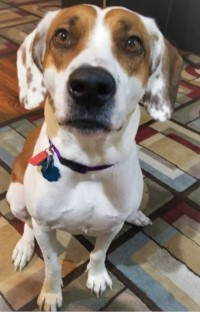

Political Campaign Professional in Washington D.C.
I am a political public affairs professional providing campaigns with voter contact support in the field and over the phone.
Successful organizers go where the people are. As technology advances and we become more connected, I'm seeking to take my career in a different direction. I am motivated to learn new digital skills organizing activists online.
I hope to master the tools used by today's activists to drive progessive change:
In the end I hope to work at a digital consulting firm providing clients with creative ways to engage their audiences and drive them to act.
If you are reading this, thank you for visiting my first crack at designing a webpage. The first few weeks using Treehouses' selfpaced tools were daunting, but the more and more I exercise the skills I learned here, the more patterns I see. Just like learning a language, the real way to learn is immersing yourself in the conversation you are building through your projects and being comfortable with not knowing everything right away
The biggest challenge I forsee in my journey will be my ability to keep a steady pace of continued study. I am prone to procrastinating and feeling discouraged. I hope to be able to surprise myself in the next few weeks.
I am looking forward to seeing the results. To celebrate this first page, here's a picture of my dog Carmen!
cheers!